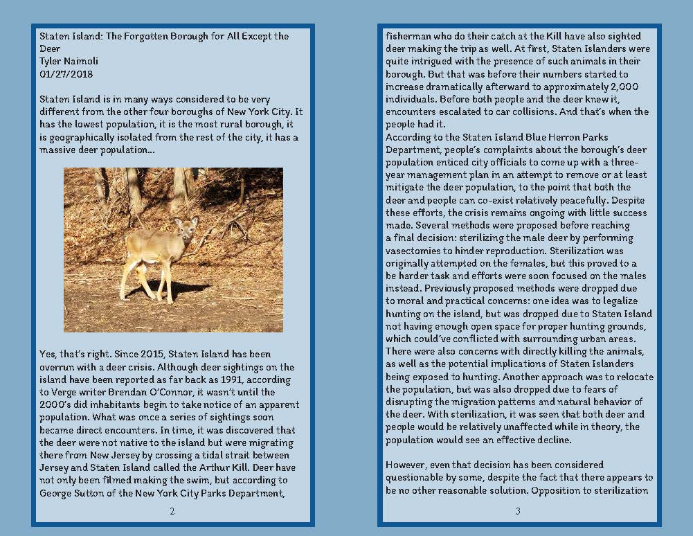
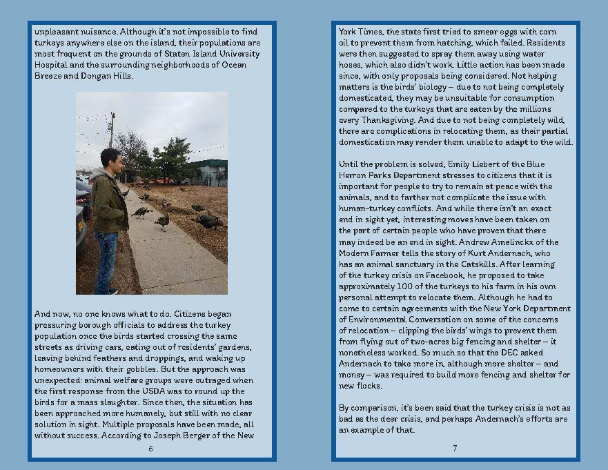
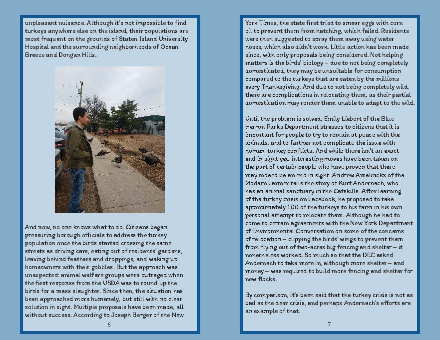
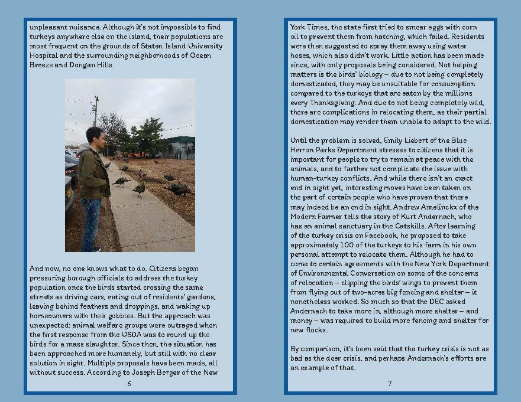
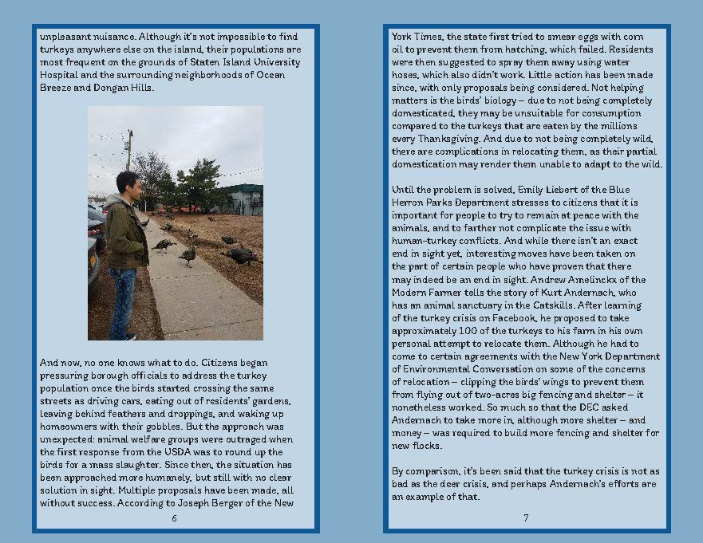
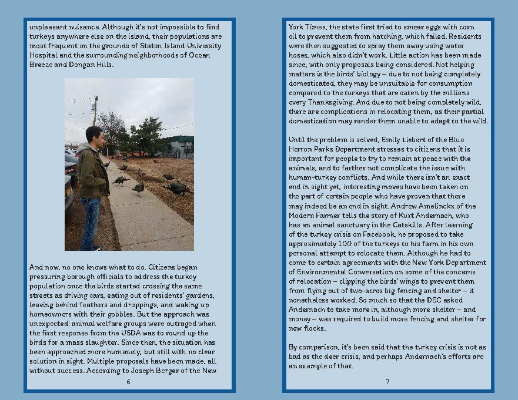

📚Naimoli Universe📚
The official Journalism Design Toolkit website of Tyler Naimoli
Home
Assignments
Videos and Maps
GitHub
Big Booklet
You will need to produce a 16-page booklet/zine in InDesign


Download File
 


